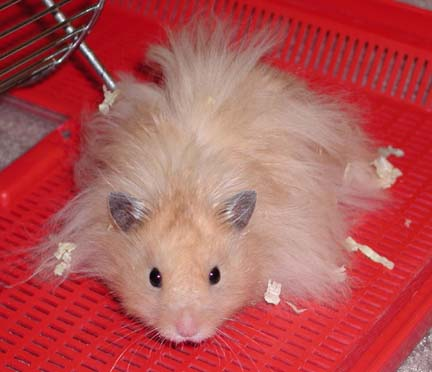

| Taming Hamsters | ||||||||||||||||||||||||||
| By David Imber | ||||||||||||||||||||||||||
|  | ||||||||||||||||||||||||||
| First, there are a few "golden rules" for picking up a hamster: | ||||||||||||||||||||||||||
| *Always wash hands thoroughly before picking up the hamster. They live by their noses and will react to your hand before it even makes contact, so it must be scent-free. Don't use fruit-scented soap, by the way. The more "authentic" the scent, the more the ham will want to taste it. | ||||||||||||||||||||||||||
| *Never wake it from sleep. | ||||||||||||||||||||||||||
| *Never "sneak-up" on a hamster - always show your hand first. | ||||||||||||||||||||||||||
| *When picking up the hamster, hold it toward you rather than away from you, and hold it with _both_ hands, and support it from the bottom. | ||||||||||||||||||||||||||
| Getting a hamster used to you requires that you train him slowly and regularly. This could be just putting your hand inside the cage and letting it lie still there for 10 minutes at a time (you can read a book at the same time). He should, over time, become curious and walk over to it. Make no attempt to grab, just let him investigate. If he begins to nibble, pull you hand away, but smoothly and without scaring him. You could also blow gently in the ham's face if he nibbles. They don't especially like the feeling, but it doesn't harm them. | ||||||||||||||||||||||||||
| When you do take him out, put him on a big supervisable surface like a bed or sofa (it should be furniture with your scent). Let him wander freely. When he comes to an edge, nudge him back with the _back_ of your hand, or even your nose or chin, rather than grabbing him. Let him play like this for some time every day, until he comes to realize that you will not grab him. | ||||||||||||||||||||||||||
| Another good technique is to get two or more people to sit on the floor, spread their legs and join at the feet, making a big "arena" for the hamster to run around in, bordered by your legs. When he gets to a border and wants to climb over, nudge him back in without grabbing. This can be a game for them. After ten minutes or so the hamster is very used to the scent and feel of humans, but feels less threatened by them. | ||||||||||||||||||||||||||
| It's the grabbing itself that can be intimidating to your hamster. Some suggest it's an instinctual reaction based upon the rodent's being a favorite target of birds of prey (your fingers resemble talons to a degree). The sooner you can get your ham to simply walk on your body without fear, the sooner your battle will be won. | ||||||||||||||||||||||||||
| The most important things are 1) scent-free hands, 2) no grabbing, 3) always show your hand first, don't surprise them, and 4) Patience, Patience, Patience. | ||||||||||||||||||||||||||
| PS: Here's a new tip I just learned recently from another hamster person. He gets into a bathtub (no water, clothed) and just lets the hamster run around all over him. Remember, once the hamster stops associating your touch with being grabbed or restricted, he's more likely to let you hold him. So this technique of letting the hamster run all over you, without picking it up, can achieve just that result. Using the bathtub, the hamster has no choice but to make a lot of contact with you, and his fear soon subsides. | ||||||||||||||||||||||||||